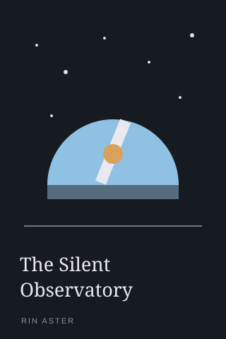
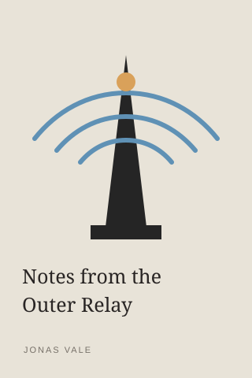
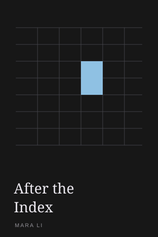
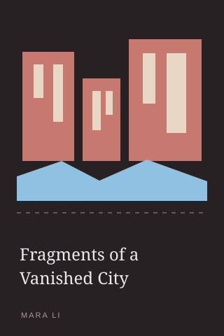

42%
Orbital MechanicsM. Kato
EPUB library and reader
Pull every book into orbit.
Open an existing folder or create a new archive. Browse covers, favorites, folders, series, and saved progress, then read in paged or continuous mode.
Series and volumes
Folders stay intact
Search and filters
Progress that resumes
Library
Your collection, organized around how you read.
Search across the archive
Browse favorites and folders
Open focused folder views
Use the app sidebar to browse Library, Favorites, or an individual folder.
All books
Library
15%
The Quiet ArchiveElena Voss
68%
Signal and DustH. Sato

28%
54%
Cover missing
100%


Find any book quickly
- Search by title, author, and book metadata
- Switch between cover grid and compact list views
- Sort and filter without leaving the current folder
Keep the folder structure familiar
- Browse the same folders already used on your computer
- Open focused views for light novels, research, or unsorted books
- Move between Library, Favorites, and individual folders from one sidebar
Read series in order
- Browse series with naturally ordered volumes
- See reading progress across the whole series
- Continue the latest volume or open the first unread one
Manage the collection directly
- Add EPUBs or drop them into the active archive
- Create, rename, move, and delete books and folders
- Edit metadata, replace covers, and update books in bulk
Reader
Read your way, then return to the exact place.
Paged or continuous reading
Searchable chapter list
Progress restored automatically
Signal and Dust · Chapter Twelve
By the time the signal crossed the inner ring, Mara had already stopped listening for a reply. The station had taught her that silence was not the absence of information. It was a shape, a pressure, a thing with weight.
Outside the glass, the archive lights moved in strict intervals. Each pulse marked a volume returned to its place, a record made legible again.
Nothing was lost. It had only been waiting for an index.
The console warmed beneath her hands. One more book entered orbit.
Click a passage to highlight it
68% · 214 / 315
02
Reading controls that follow the book
- Switch between paged and continuous reading
- Search the table of contents and jump to any chapter
- Move by page or chapter, then continue into the next volume
- Adjust theme, typeface, size, spacing, and page width
Discover
Move from a full archive to the right next book.
Folder browsing
Series overview
Focused filters
Folders stay familiar
Browse the same archive structure you already maintain on your computer.
Your Library
Your Library/
├── Favorites
├── Folders/
│ ├── Light novels
│ ├── Research
│ └── Classics
├── Series/
│ ├── Orbital Mechanics
│ └── Signal and Dust
└── Filters/
├── Reading status
└── LanguageSeries stay in reading order
See volumes together, spot likely gaps or duplicates, and continue from the right book.
Filters work together
Combine series, subject, language, publisher, reading status, favorites, and missing-info filters.
Get started
Start with the EPUBs you already have.
Review what changed in the latest release
Choose an available download from GitHub
Inspect the repository before installing
View latest release
Build from source · PowerShell
❯ git clone https://github.com/TommyMoonn/archeion.git
❯ cd archeion
❯ npm install
❯ npm run tauri:dev
Prefer the source? Clone, install, and run Archeion locally.